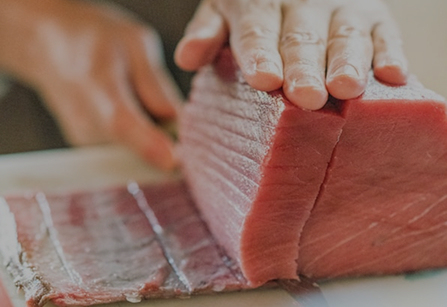
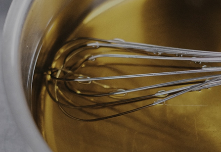
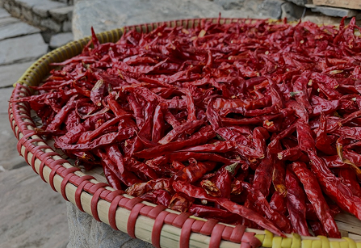
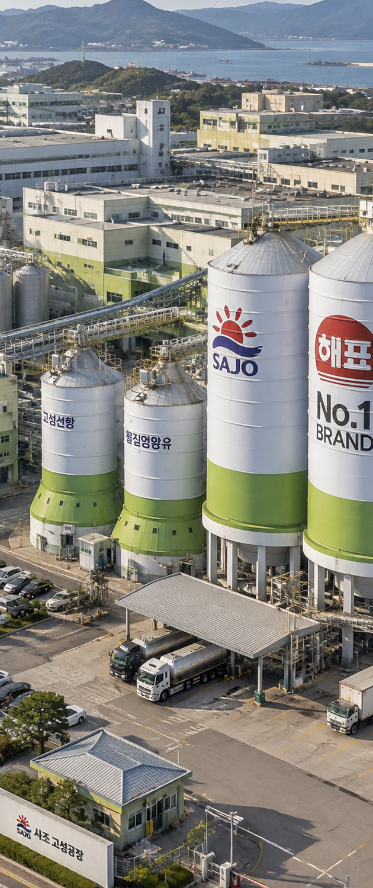
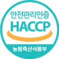
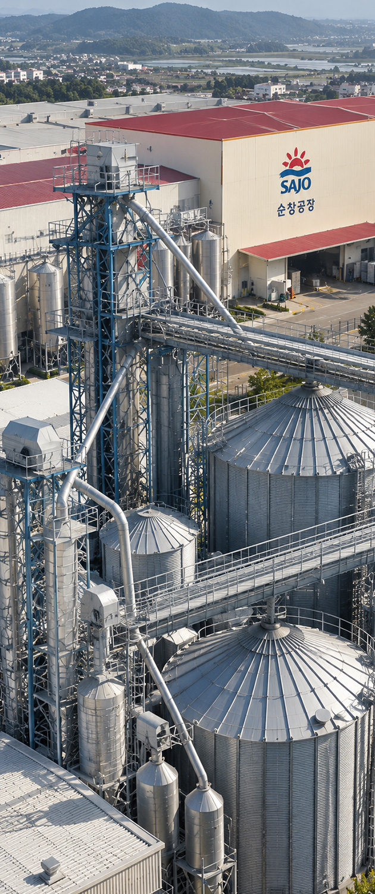

HOME > 사업영역 > 식품사업
FOOD BUSINESS식품사업
신선하고 깨끗한 것을 드리고 싶은 마음
맛있는 일상을 만드는 정성으로
더 풍요로운 식탁을 채웁니다
FOOD BUSINESS
건강하고 깨끗한
식탁문화를 위한 식품사업
- #식품제조
- #품질관리
- #수직계열화
- 사조산업은 건강하고 깨끗한 식탁문화를 지키기 위해 HACCP 도입 등 깨끗한 제품 생산에 최선을 다하고 있습니다.
- 2011년 사조그룹에서 신수종 사업으로 진출하는 축산사업에서 사조대림은 첫 단추가 되고 있습니다. 대두유의 원료인 콩에서 유지를 추출하고 남은 대두박으로 가축의 사료를 만들어 가금류와 돼지를 직접 기르며 축산업, 도축사업, 가공사업까지 사업구조를 수직계열화시켜 나가며 사업을 전개해 나가고 있습니다. 이에 따른 수익구조 개선은 신제품 개발과 품질관리에 집중할 수 있게 되어 제품 경쟁력을 확보해 나가고 있습니다.
- 사조대림의 주요제품으로는 '대한민국 대표 식용유'로 유명한 해표 식용유와 업계에서 유일하게 참치를 직접 잡고 제품을 직접 만드는 사조참치가 있습니다. 이 밖에도 웰빙 트렌드에 맞춰 김, 소금, 면류, 소스류, 식초음료 등 다양한 제품으로 다양화 시켜나가고 있습니다.
- 식용유 부문에서는 포도씨유, 카놀라유, 올리브유, 현미유, 녹차유 등 다양한 고급유를 선보여 유지류 고급화에 앞장 서고 있습니다. 또한 국내 최초로 참치 전 제품에 해썹(HACCP 위해 요소 중점 관리 기준) 인증을 받아 건강한 참치의 새로운 기준을 제시하고 있으며, 고추장 시장에서는 국내 최초로 전 제품에 100% 우리햅쌀을 넣은 순창궁 햅쌀 고추장을 출시하면서 차별화된 제품력으로 시장의 큰 호응을 받고 있습니다.
FOOD PORTFOLIO 사조대림의 주요 식품사업
수산물 제조부터 식용유와 장류까지,
생산 인프라와 품질관리 역량을 바탕으로 식품사업을 전개합니다.
-

01. CANNED SEAFOOD
- 통조림
- 참치캔 생산 및 수산가공식품 신규 시장 진출
-

02. OIL
- 식용유
- 해표 식용유와 포도씨유·카놀라유·올리브유
·현미유·녹차유 등 고급유
-

03. PASTE
- 장류
- 고추장·된장·혼합장 총 74품목 생산
MANUFACTURING SITE 공장소개

CANNED SEAFOOD 고성공장
바다의 신선함을 건강한 식탁으로저희 사조는 수산전문업체로서의 선도적 위치에 만족하지 않고 바다의 신선하고 풍부한 영양을 식탁에 전하며 보다 나은 국민 식생활 문화 창조에 앞장서고 있습니다.
고단백 저칼로리 식품인 참치의 대중화를 목표로 참치캔 시장에 진출하여 오랜기간 쌓은 노하우를 바탕으로 품질 좋은 참치캔을 공급하고 있으며, 직접 어획한 "물 좋은" 참치만을 원료로 사용하고 있습니다.
또한 연구소 및 마케팅 공조, 참치캔을 포함한 수산물제조 및 원료 Sourcing 인프라를 활용, 지속적인 신제품 개발 및 수산가공식품 신규 시장 진출로 매출확대 및 수익성 향상에 집중하고 있습니다.
- 주소
- 경남 고성군 고성읍 율대5길 29
- 경남 고성군 고성읍 율대5길 54-3
- 경남 창원시 마산합포구 전전면 대실로 170
- 부지 및 연면적 (단위 : m²)
-
구분 부지 연면적 용도별구분 공장 사무실 후생시설 고성공장 23,990 19,978 17,569 645 1,764 의창냉장 4,895 3,101 3,015 86 -
- 생산품목
- 참치캔

- HACCP 인증 · 위해요소중점관리기준
- 원료에서부터 제조, 유동단계까지 발생할 수 있는 위해요소를 각 단계에서 세밀히 분석하고 엄격히 사전관리하여 안전한 식품을 제조하는 과학적인 위생관리 SYSTEM입니다.

PASTE & SAUCE 순창공장
장류의 고장에서 만드는 깊은 맛사조산업(주)순창공장은 장류의 고장인 전라북도 순창에 위치해 있으며 신축 장류 생산공장으로 고추장, 된장, 쌈장 등을 생산할 수 있는 최신식 제조 설비를 갖추고 기존의 업소용 장류 뿐만이 아닌 가정용 장류도 본격 생산 판매하고 있습니다.
- 햅쌀
- 100% 우리 햅쌀로(24시간내 도정) 담아서 찰지고 잡맛이 없고 뒷맛이 개운합니다.
- 태양초
-
자연상태에서 햇볕에 바짝 말린 100% 태양초를 사용.
고운 빛깔(밝은선홍색)과 칼칼한 매운맛이 특징.
장 맛에 영향을 주는 물과 소금까지 청정제품 사용
- 물
- 섬진강 유역의 천연 암반수만을 사용
- 소금
- 전남 신안군의 청정 갯벌에서 천일염을 사용, 맛의 수준을 높임
- 주소
- 전북 순창군 인계면 물통길 22-35
- 부지 및 연면적 (단위 : m²)
-
구분 부지 연면적 용도별구분 공장 사무실 후생시설 고성공장 23,990 19,978 17,569 645 1,764 의창냉장 4,895 3,101 3,015 86 -
- 생산품목
- 고추장 된장 혼합장
- HACCP 인증 · 위해요소중점관리기준
- 원료에서부터 제조, 유동단계까지 발생할 수 있는 위해요소를 각 단계에서 세밀히 분석하고 엄격히 사전관리하여 안전한 식품을 제조하는 과학적인 위생관리 SYSTEM입니다.